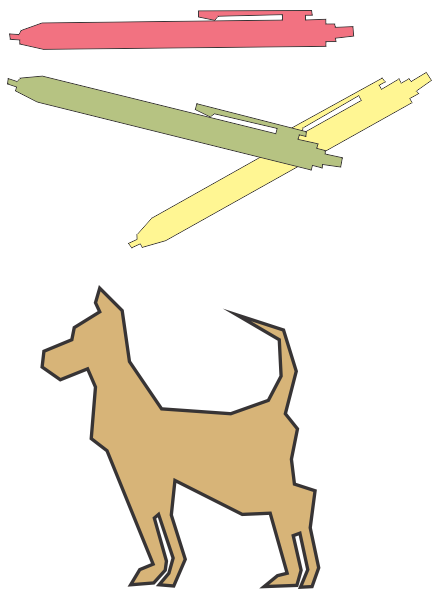

|
 |
 |
 |
 |
Herramienta Polilínea
Además de la herramienta Mano alzada, CorelDraw incorpora en la cuarta posición de la caja de herramientas otra herramienta de utilidad equivalente, aunque más cómoda de usar. La caraacteristica más sobresaliente de esta herramienta es que permite trazar una polilínea (línea formada por varios segmentos rectos) con sólo pulsar en las posiciones donde la línea cambia de dirección. Con esta herramienta resulta más comodo trazar líneas de más de un segmento recto puesto que nos ahorra la pulsación sobre el extremo del último segmento antes de iniciar el siguiente.
También permite el trazado de segmentos curvos con sólo arrastrar el puntero.
Para terminar el trazado de una línea será necesario hacer doble click al marcar el extremo final.
Si activamos el botón CERRAR AUTOMATICAMENTE CURVA se creara desde el comienzo una línea cerrada.
Como practica realize el siguiente ejercicio:
